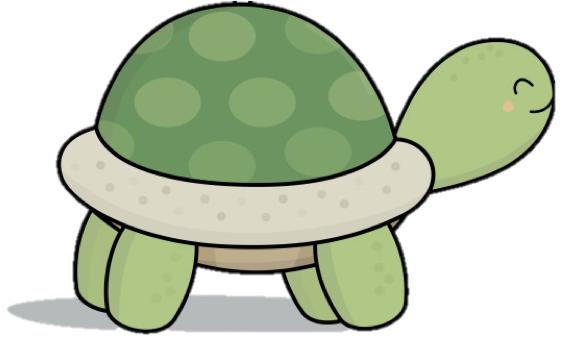
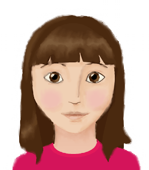
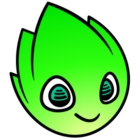

Welcome to an open space on the Platform for Innovative Learning Assessments (PILA)!
Here are a few sample tasks to get an idea of what is inside our learning and assessment applications!

Karel the Turtle on PILA
Students program a robotic turtle to navigate a grid-like world.
Karel tasks target computational problem solving and self-regulated learning.

Betty's Brain on PILA
Students learn and teach a virtual student, Betty, about complex phenomena.
Betty units target causal reasoning, systems thinking, and self-regulated learning.

PILA Game Creator
Powered By Cand.li
Students design, develop, and test games.
Cand.li tasks target computational probem solving, creative thinking, and self-regulated learning.
All PILA application provide actionable feedback to teachers & students.
The tasks and assignments can also be customized!
Try out some of these tools by using the buttons below.